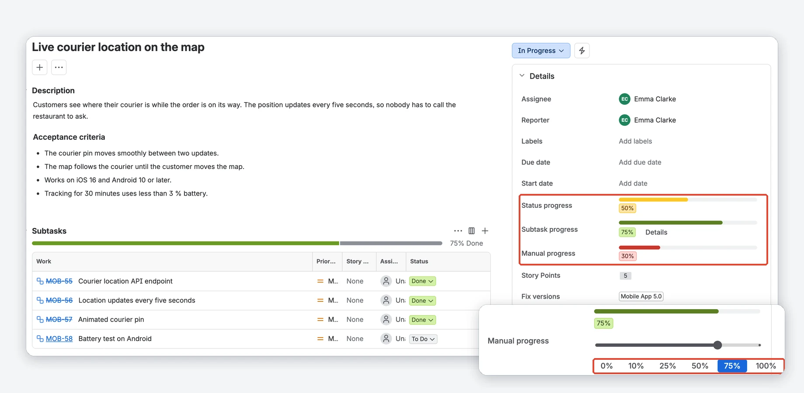
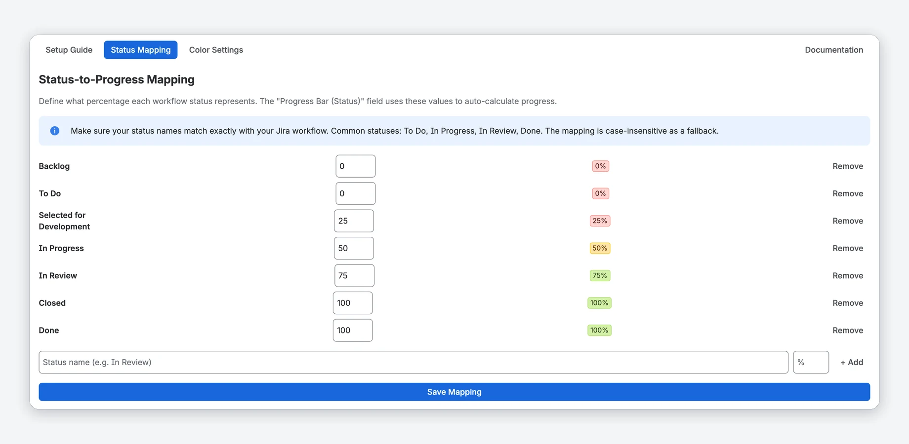
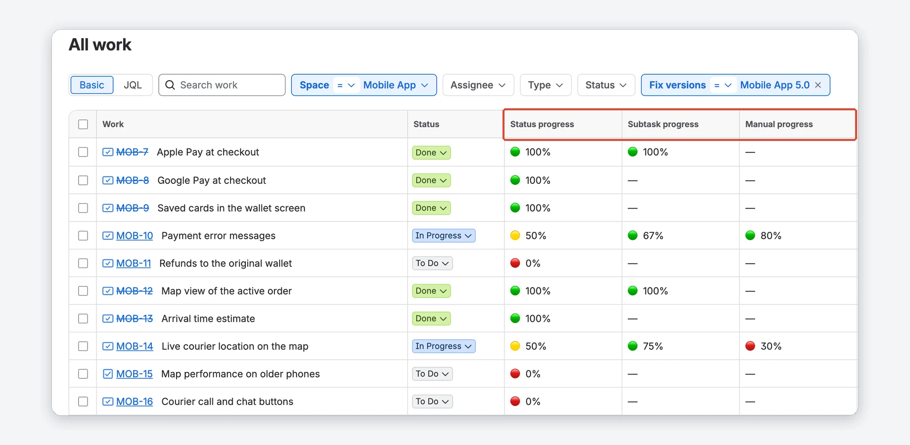
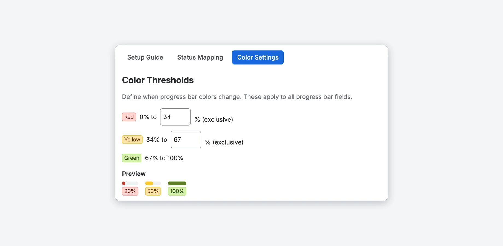
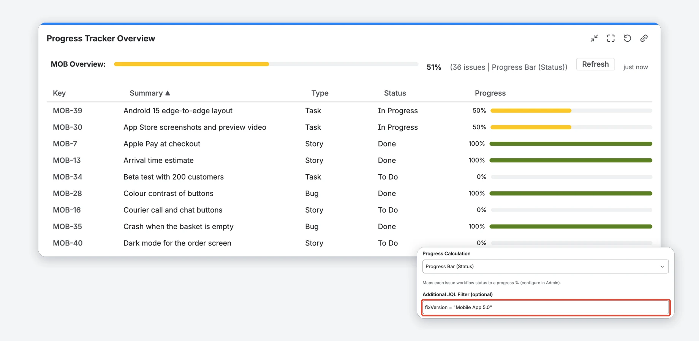
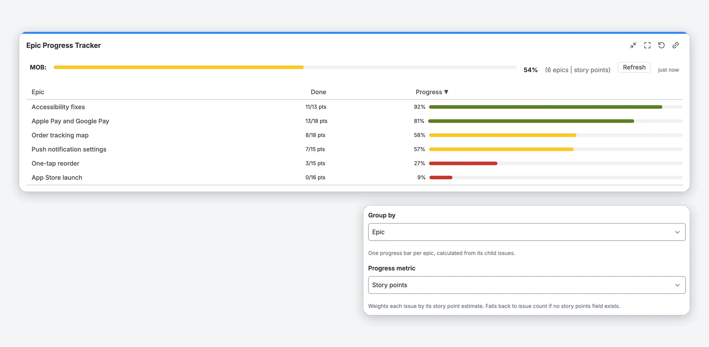

Visual Progress Tracker for Jira — Documentation
Color-coded progress bars on Jira issues, in list views and on dashboards. The basic setup takes about two minutes.
On this page
Quick start
- Install the app from the Atlassian Marketplace on your Jira Cloud site.
- Create a field: Jira settings → Work items → Fields → Create field, search for
Progress Barand pick one of the three types. - Add the field to your project screens. Open an issue: the bar is there.
- Using the Status or Subtasks type? Check under Apps → Visual Progress Tracker → Status Mapping that every status you use has a percentage.
- Optional: add the Progress Tracker Overview or Epic Progress Tracker gadget to a dashboard.
Overview
Visual Progress Tracker adds three custom field types to Jira. Each shows a bar that turns red, yellow or green as progress rises:
- Progress Bar (Manual): people set the percentage with a slider or quick buttons.
- Progress Bar (Status): the percentage comes from the issue's workflow status, using a mapping you define.
- Progress Bar (Subtasks): the average progress of the issue's subtasks or child issues.
Two dashboard gadgets show a whole project or one bar per epic. You choose where the colors switch (see color thresholds).

Installation
Install the app once per Jira Cloud site.
- Open Visual Progress Tracker on the Atlassian Marketplace and click Try it free (or Get it now).
- Select your Jira Cloud site and confirm the installation.
- Check: Apps in Jira's top navigation now lists Visual Progress Tracker. It opens the settings page.
Adding progress bar fields
The app does not add fields on its own. Create each field once, then put it on your issue screens.
- Go to Jira settings (gear icon) → Work items → Fields (older Jira: Issues → Custom fields).
- Click Create field, search for
Progress Barand select Progress Bar (Manual), (Status) or (Subtasks). - Name the field (for example "Progress") and click Create.
- Add the field to the screens of your projects (Jira settings → Work items → Screens, or the project's own screen settings).
Manual progress
People set the percentage by hand. Use it for work where completion is an estimate, such as design or content tasks.
- Click into the field on an issue.
- Drag the slider (5% steps) or click a quick button: 0, 10, 25, 50, 75 or 100%.
- Save with the check mark.
The field can also be filled in on the create and transition screens, as part of the normal workflow.
Status-based progress
The bar shows the percentage you assigned to the issue's current status. One mapping applies to the whole site.
- Open Apps → Visual Progress Tracker and select the Status Mapping tab.
- Change the percentages (0–100) and click Remove on statuses you do not use. To add one, enter the exact status name and a percentage, then click + Add.
- Click Save Mapping. Only Jira administrators can save.

Default mapping and details
- The list starts with: To Do 0%, Backlog 0%, Selected for Development 25%, In Progress 50%, In Review 75%, Done 100%, Closed 100%.
- Status names are matched exactly first; if that fails, capitalization is ignored.
- While you create an issue, the field shows "—" and "Auto-calculated from status". The value appears once the issue exists.
Subtask progress
The bar shows the average progress of the issue's subtasks. Without subtasks it uses the child issues instead, for example the issues in an epic. No setup is needed.
- A done child counts 100%.
- Every other child counts with the percentage of its status in the status mapping.
- An issue without children shows "—".
Example: a story has 4 subtasks, 2 done and 2 To Do: 50%. One moves to In Progress (50% by default): 63%. All 4 done: 100%.
Click Details next to the bar to list every child with its status and progress; Hide collapses the list.
What counts as done, and editing
- "Done" means the child's status is in Jira's status category Done, whatever the mapping says for that status. Child issues also count as done when they have a resolution.
- Clicking into the field shows the same list read-only, because this field cannot be edited.
- While you create an issue, the field shows no value and cannot be edited. The value appears once the issue exists.
Progress in list view
All three types can be columns in Jira's list view. Each cell shows a red, yellow or green dot and the percentage; empty values show a dash.

- Open a project's List view.
- Open the column picker and search for the name of your progress field.
- Check the box to show the column.
Admin settings
The app's page under Apps → Visual Progress Tracker has three tabs: Setup Guide (a short in-app guide), Status Mapping (see Status-based progress) and Color Settings. Only Jira administrators can save changes.
Color thresholds
On the Color Settings tab you set where bars change color. A live preview shows the result.
- Red: 0% up to the first value (default 34%, so 0–33%)
- Yellow: from the first to the second value (default 34–66%)
- Green: from the second value (default 67–100%)
Both values must be between 1 and 99, and the first must be lower than the second. Click Save Settings. The thresholds apply to the bars on issues and in both gadgets, not to list view columns.

Recalculate All Fields
Status and Subtask values update when someone opens an issue. The Recalculate All Fields button at the top of the page updates them for all issues at once. Use it after you change the status mapping or add the fields to a project. Manual values are never changed.
How the recalculation runs
- It runs in small batches, so it also works on large projects. The result shows how many issues were updated, skipped (field not on the issue screen) or failed, and how many projects could not be read.
- It can run once every 7 days. While it is locked, the page shows the date of the next run. A manual run that writes no value does not count.
- When you open the page and most recent issues have no value yet, the app runs the recalculation automatically. That run counts as the weekly one.
Overview gadget
The Progress Tracker Overview gadget lists the issues of one project with their progress and shows the average on top.

How to add the gadget
- Open a Jira Dashboard and click Add gadget.
- Search for Progress Tracker Overview and click Add.
- In the gadget settings, choose:
- Project.
- Progress Calculation: Subtasks (default; average of the child issues), Status (status mapping) or Manual (the values of the Manual field; if the site has no Manual field, the status mapping is used).
- Additional JQL Filter (optional).
- Rows per Page: 10, 25 or 50 (default 25).
- Click Save Configuration.
The table has the columns Key, Summary, Type, Status and Progress. Click a header to sort; the gadget starts sorted by progress, highest first. Issues without a value show "—" and are left out of the average.
JQL filter
The gadget adds your JQL filter to the selected project, so write only the extra conditions:
sprint in openSprints(): issues in the active sprint.assignee = currentUser(): issues assigned to the person viewing the dashboard.labels = "frontend": issues with a label.
Limits, errors and refreshing
- Keep the filter under 500 characters. An
ORDER BYclause is ignored; sort with the column headers instead. - If Jira rejects the filter, the gadget shows Jira's error message so you can fix it in the settings.
- The gadget loads up to 500 issues. If more match, a note at the top says it shows the first 500. Narrow the filter (sprint, epic, label) to see the rest.
- Results are kept in a cache for up to 5 minutes per viewer. The gadget shows the age of the data (for example "5 min ago"); Refresh loads the latest data at once.
Epic Progress Tracker gadget
The Epic Progress Tracker gadget shows one bar per epic, or one bar per assignee. Use it when stakeholders want each epic's progress without opening it.

How to add the gadget
- Open a Jira Dashboard, click Add gadget, search for Epic Progress Tracker and click Add.
- In the gadget settings, choose:
- Project.
- Group by: Epic (one bar per epic, from its child issues) or Assignee (one bar per person, from their issues).
- Progress metric: Issue count or Story points.
- Additional JQL Filter (optional): in Epic mode it filters the epics, in Assignee mode the issues.
- Rows per Page: 10, 25 or 50 (default 10).
- Click Save Configuration.
- Issue count: every issue counts equally. Done shows done issues out of all issues (for example "8/16"). The bar is the average progress, so issues in progress count partly, based on the status mapping.
- Story points: each issue is weighted by its story points, so a large story moves the bar more. Done shows points (for example "8/16 pts"). Issues without an estimate have no weight.
The bar at the top is the average of the rows. Caching and the Refresh button work as in the Overview gadget.
Limits and details
- In Assignee mode, epics and subtasks are left out and unassigned issues get their own row.
- The gadget loads up to 100 epics (newest first) with up to 1,000 child issues for every 50 epics, or up to 500 issues in Assignee mode. If results are cut off, it shows a note; narrow the JQL filter.
- Story points mode finds your site's "Story Points" or "Story point estimate" field itself. If there is none, the gadget uses issue count and shows a note.
What's included
There is one edition with every feature. Sites with up to 10 users use it for free. Larger sites start with a free trial and need a subscription after the trial; without one, the fields show a "Trial ended" message, the gadgets ask for an active license and the settings are read-only.
| Feature | Included |
|---|---|
| Manual, Status and Subtask progress fields | Yes |
| Progress Tracker Overview gadget | Yes |
| Epic Progress Tracker gadget (per epic or assignee, issue count or story points) | Yes |
| Status mapping and color thresholds | Yes |
| Color-coded list view columns | Yes |
| Email support | Yes |
FAQ & troubleshooting
Click a question to see the answer.
The Status bar shows 0% even though the issue has a status.
The status is probably not in the status mapping. Add it with its exact name and save. Then open the issue again, or click Recalculate All Fields to update all issues.
I added the field to a project but existing issues show "—".
Status and Subtask values are calculated when an issue is opened, so issues nobody has opened yet stay empty. Click Recalculate All Fields on the app's page to fill them.
Can I use multiple field types on the same issue?
Yes. For example, use the Manual bar for overall progress and the Subtask bar for child issue completion.
Do progress bars update automatically?
Status and Subtask fields recalculate every time you open an issue. Manual fields change only when someone sets a new value.
Are progress values available for JQL search?
Yes. When someone opens an issue, the calculated value is saved in Jira. It is then available for JQL, the REST API and list view columns. Issues not opened since their last status change may show an older value.
The Recalculate button shows a date instead of running.
Recalculation is limited to once every 7 days, and the page shows the next available date. A run that wrote no values does not count. Single issues recalculate when opened, so you rarely need it.
Recalculate says "no field values were written".
No checked issue was updated. Usually the Status and Subtask fields are not on the issue screens of those projects. Add them under Jira settings → Work items → Screens, then run Recalculate All Fields again. This run does not use up the weekly recalculation. The message also says how many issues could not be updated and how many projects could not be read.
Recalculate says "recalculation paused".
Jira answered too slowly or a request failed, so the run stopped after the issues it had finished. Click Continue within 6 hours of the start. It resumes with the next issue and does not use up another weekly recalculation. If nothing had been changed yet, run it again in a few minutes.
I changed the color thresholds but the colors did not change.
Click Save Settings on the Color Settings tab and reload the issue. Thresholds apply to issue bars and gadgets. List view columns always use the fixed 34% and 67% limits.
Where is my data stored?
All configuration data is stored in Atlassian Forge Storage within your Jira Cloud site. No data is sent to external servers, and the app runs entirely on Atlassian infrastructure (Runs on Atlassian). The dashboard gadgets also keep a cache of their results per viewer, used for up to 5 minutes. Details: Privacy Policy · Security Policy.
How do I uninstall?
Go to Jira settings → Apps → Manage apps, find Visual Progress Tracker and click Uninstall. Atlassian keeps the app's stored data (settings and cache) for 28 days after the uninstall and then deletes it, see the Privacy Policy. Field values remain in Jira until you delete the fields.
Support
- Email: support@janekbehrens.de. Please include your Jira site URL.
- Bugs and feature requests: GitHub issue tracker.
- Response time: we aim to answer within 24 hours, see the Support page.